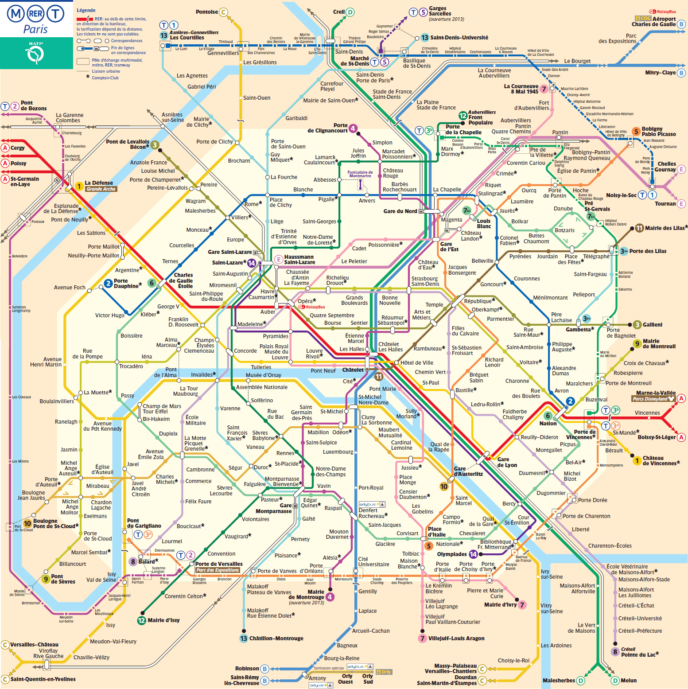
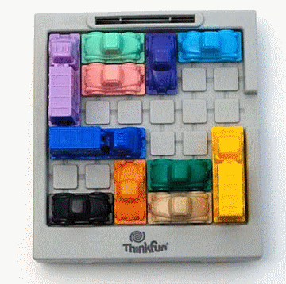
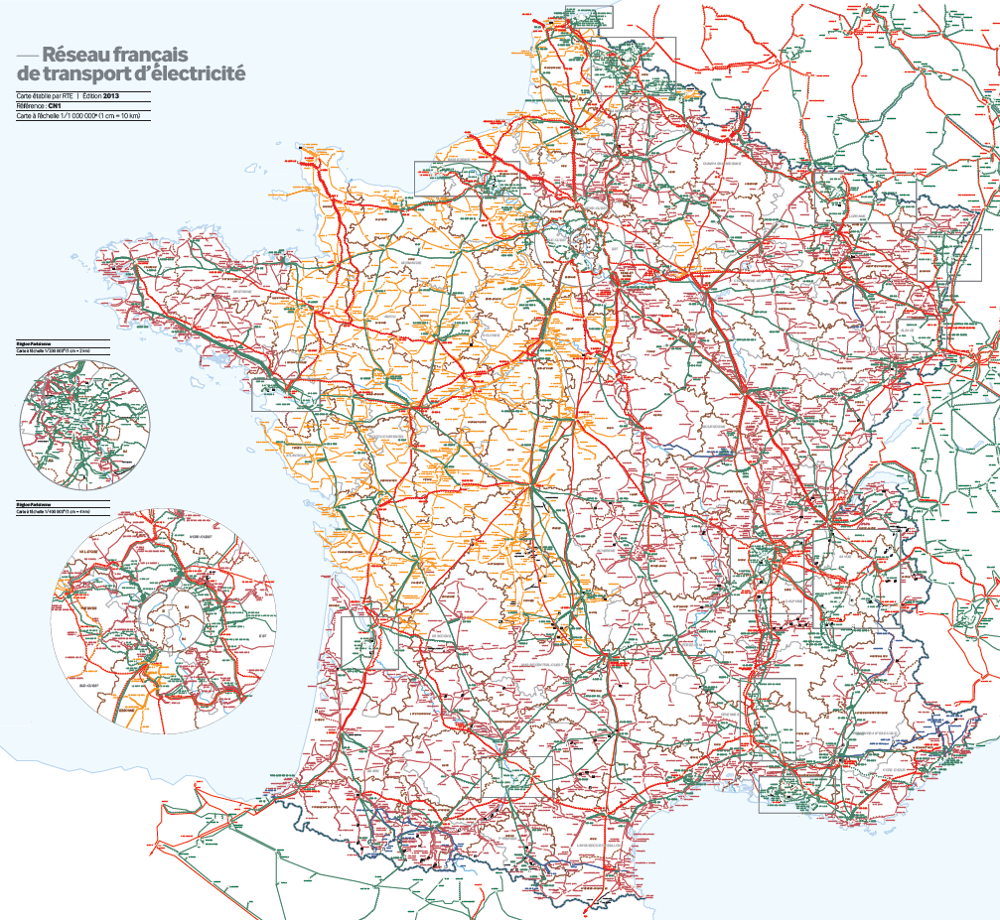

Algorithmique des graphes
Ce dépôt à destination des L3 Informatique et Mathématiques de l’UPVD reprend le cours
Algorithmique avancée du
M1 Informatique pour la Science des Données, Université Paris-Saclay, Faculté d’Orsay
Les passages modifiés par rapport à l’original sont précédés du tag #UPVD.
Certains passages spécifiques à l’organisation parisienne on été supprimés.
«L’objectif de ce cours est de fournir des outils et techniques algorithmiques de pointe aux apprentis. Étude de l’algorithmique sur les graphes (plus courts chemins, tri topologique, …), les techniques de mémorisation, de programmation dynamique et de backtracking. Présentation de la notion de flots et des algorithmes de calcul de flot maximal. Enfin, les thèmes des algorithmes online et approchés seront abordés.»
Enseignants à l’origine de ces supports
Florent Hivert (pas cette année)
Viviane Pons (pas cette année)
#UPVD Enseignant pour cette expérimentation à l’UPVD
Vue d’ensemble
Les notions du cours seront abordées par la pratique, tout d’abord par l’implantation de structures de données de graphes, puis leur utilisation pour résoudre quatre problèmes.
Structures de données pour les graphes
Problème 1: Le chemin le plus rapide en métro de Montgallet à Billancourt ?
{kind=link}

Problème 2: Rush Hour
La voiture rouge est coincée dans un embouteillage; comment déplacer les véhicules pour la faire sortir? Ci-dessous le défi 1. Saurez-vous faire résoudre par l’ordinateur le défi 40 en un nombre minimum du coups?

Problème 3: Faire passer le maximum de courant
{kind=link}

Problème 4: Fabriquer et résoudre des labyrinthes#
#UPVD Planning#
12 séances de 3h: Cours ou cours + TD + TP intégré
mercredi 14h-17h, salle banalisée (1h30) puis salle info (1h30)
Graphes: structures de données, terminologie, plus courts chemins#
2026-09-09 2026-09-16 (+ test Python)
Arbres couvrants#
Parcours et plus court chemin#
Réseaux et flots#
CC et CT#
Semaine des examens
#UPVD Modalités d’évaluation#
L’évaluation se fera sur vos TPs, évalués à l’oral (CC), ainsi que sur un examen (CT)
Note UE : 1/2 CC + 1/2 CT
Annales#
Désolé, je n’en n’ai pas encore.
Du bon usage des aides#
Vous avez à disposition de multiples aides: enseignant, solutions en ligne, collègues, copains, famille, robots conversationnels, etc.
Vous êtes responsables de votre progression, à vous de les utiliser à bon escient.
Nos conseils
Les exercices de ce cours sont à réaliser par vous-même pour qu’ils soient utiles à votre progression. Copier ou simplement adapter une solution existante ne vous apportera pas grand chose.
Si, après un temps de réflexion personnelle approfondie, vous ne voyez pas comment avancer, alors n’hésitez pas à demander des indications à vos aides.
Si vous vous adressez à un robot conversationnel, soyez précis dans votre invite (prompt): «Vous êtes un enseignant bienveillant d’un cours de master d’algorithmique de graphes. Je dois résoudre l’exercice suivant: … J’ai essayé … Sans me donner la solution, pourriez vous me donner une indication sur comment avancer à partir de là?»Vous pouvez aussi utiliser vos aides pour discuter vos solutions aux exercices.
Privilégiez les conversations avec des humains; elles sont plus fécondes qu’avec un robot.
Vous êtes aussi responsable de votre impact environnemental
Évaluation des TPs
Vous ne serez pas évalués sur vos rendus de TP, mais lors de deux ou trois mini-oraux portant sur le thème des TPs.
Motivation:
Vous inciter à comprendre les TPs plus qu’à les remplir.
Consacrer mon temps de correction des TPs à des dialogues individuel féconds, plutôt qu’à faire le flic et compter des points derrière mon ordi.
Vous faire remémorer vos TPs après la fin de ceux-ci, pour aider à ancrer les apprentissages sur le plus long terme.
Environnement de travail#
Langage de programmation: Python 3
Bibliothèques: networkx + matplotlib + …
Environnement interactif: Jupyter
Forge logicielle: GitHub
Dans cette section, nous expliquons:
Comment accéder aux logiciels requis
Comment télécharger et déposer vos devoirs
Les instructions font l’hypothèse que vous travaillerez sur ce cours dans votre
répertoire ~/L3-AlgoGraphes. Vous pouvez choisir un autre nom.
Accéder aux logiciels requis#
Ce cours utilise Python, Jupyter et quelques bibliothèques classiques (voir le fichier pyproject.toml, ainsi que quelques paquets Python plus ou moins maison.
#UPVD Installation en local de l’environnement de travail
Vous devez installer les logiciels sur votre machine et travailler en local.
#UPVD Instructions d’installation avec uv
Si vous ne l’avez pas déjà fait, installez le gestionnaire d’environnements uv.
Si vous ne l’avez pas déjà fait, téléchargez la «salle de TP virtuelle» :
git clone https://github.com/phillanglois/L3-Algo-Graphes.git
Allez dans le dossier contenant le matériel pédagogique et lancez JupyterLab. Les logiciels requis seront automatiquement installés dans ce dossier.
cd ~/L3-Algo-Graphes uv run jupyter lab
% uv run jupyter lab tableau_de_bord.md
La liste des logiciels pourra être mise à jour en en cours de semestre. Dans ce cas:
cd ~/L3-Algo-Graphes
git pull
uv sync
En savoir un peu plus
Ce qui suit permet de mieux appréhender l’architecture logicielle de l’environnement mis en place par les collègues d’Orsay. Il permettra aux curieux de comprendre les évolutions entre l’environnement classique jupyter utilisé en L1 et celui-ci.
uv le gestionnaire de paquets python ; les fichiers de la configuration de l’environnement utilisé sont
pyproject.toml(lisible et utile) etuv.lock(moins lisible)jupytext “remplace” les fichiers .ipynb par leurs équivalents en .py ou .md exploitables et exécutables sous jupyter ; les fichiers de configurations sont dans
/install_files
% :::{admonition} Avec Docker
TODO UPVD Télécharger et déposer les devoirs#
Le matériel pédagogique de ce cours est réparti sous la forme de devoirs que vous
téléchargerez depuis le tableau de bord. Par exemple, lors de la première séance, vous
téléchargerez le devoir 1-StructuresDeDonnees et suivrez les instructions dans les
feuilles successives README.md, 00-*.md, 01-*.md, … ainsi que Rapport.md.
Depuis le tableau de bord, vous pouvez déposer votre travail aussi souvent que vous le souhaitez. Cela permet d’en avoir une sauvegarde et de le rendre disponible à vos enseignants et éventuellement votre binôme.
Depuis le tableau de bord, vous pouvez aussi accéder au devoir et à votre dépôt, par exemple pour en consulter l’historique.
Pour en savoir plus
Chaque devoir est publié sous la forme d’un dépôt git sur la forge logicielle GitLab de l’université. Télécharger le devoir revient à en faire une copie locale (clone) ou la mettre à jour (pull) si elle existe déjà. Déposer revient à créer une divergence privée (fork) ou de la mettre à jour si elle existe déjà (push)
{#section}#
TODO Consultation des résultats des tests automatiques
Vous pouvez consulter les résultats des tests automatiques en navigant sur votre dépôt depuis le tableau de bord. Quelques minutes après avoir déposé, un badge apparaîtra avec votre score. Cliquez dessus et suivez les liens pour consulter le résultat de la correction automatique.
Travail en binôme#
Les TP seront à effectuer en binôme. Vous trouverez sur cette page web des suggestions sur comment travailler en binôme, et notamment configurer vos dépôts sur GitLab pour faciliter la collaboration et la correction.